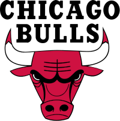
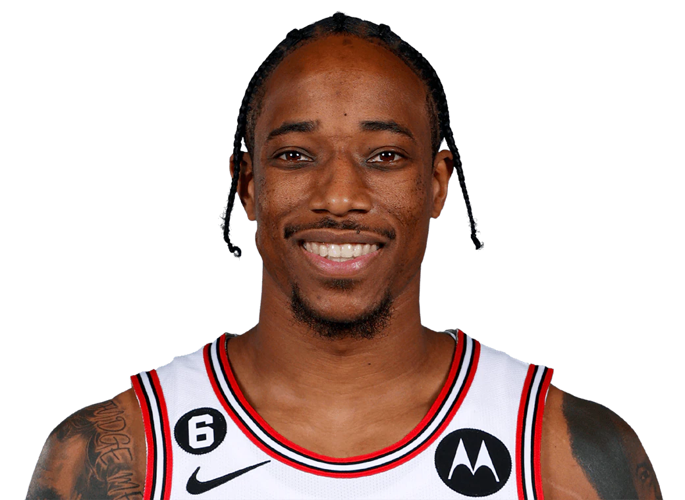

Chicago Bulls

Chicago Bulls so ameriška profesionalna košarkarska ekipa s sedežem v Chicagu. Bulls tekmujejo v Nacionalni košarkarski zvezi (NBA) kot član osrednje divizije vzhodne konference lige. Ekipa je bila ustanovljena 16. januarja 1966 in je svojo prvo tekmo odigrala v sezoni NBA 1966–67. Bullsi svoje domače tekme igrajo v United Centeru, areni na West Sideu v Chicagu. Največji uspeh so Bulls dosegli v devetdesetih letih, ko so odigrali pomembno vlogo pri popularizaciji lige NBA po vsem svetu. Znani so po tem, da imajo eno največjih dinastij lige NBA, saj so med letoma 1991 in 1998 osvojili šest naslovov prvaka lige NBA z dvema tremama. Vseh šest njihovih šampionskih ekip so vodili člani dvorane slavnih Michael Jordan, Scottie Pippen in trener Phil Jackson. Bullsi so edina franšiza lige NBA, ki je osvojila več naslovov prvaka, a nikoli v svoji zgodovini ni izgubila finalne serije lige NBA. Bullsi so v sezoni 1995–1996 zmagali na 72 tekmah, s čimer so postavili rekord NBA, ki je ostal, dokler Golden State Warriors niso zmagali na 73 tekmah v sezoni 2015–16. Biki so bili prva ekipa v zgodovini NBA, ki je zmagala na 70 tekmah ali več v eni sezoni, in edina franšiza NBA, ki ji je to uspelo do Warriors 2015–16. Od leta 1998 Bullsom ni uspelo povrniti nekdanjega uspeha. Franšiza se je borila skozi leta 2000, vendar je pokazala obetavnost v zgodnjih 2010-ih pod vodstvom Derricka Rosea in Joakima Noaha, kar je doseglo vrhunec v zaporednih sezonah nad 0,732 v letih 2010–11 in 2011–12. Poškodba Rosea in kasnejše menjave ključnih igralcev so sprožile obnovo, ki je dosegla vrhunec v trenutni zasedbi, sestavljeni okoli zvezdnikov Zacha LaVinea, DeMarja DeRozana in Nikole Vucevica.
Trenutna ekipa

29. julija 2021 so Bullsi v drugem krogu z 38. izbiro izbrali domačega fanta Ayo Dosunmu. 2. avgusta 2021 so Bullsi poslali Tomasa Satoranskyja, Garretta Templa, drugega kroga 2024 in prejeli denar k New Orleans Pelicans za Lonza Balla. Istega dne so Bullsi uspeli podpisati pogodbo s prostim agentom in prvakom lige NBA 2020 Alexom Carusom, potem ko se on in Los Angeles Lakers niso uspeli dogovoriti. Kot del iste obnove pred sezono je 11. avgusta Chicago objavil menjavo, v kateri je poslal Thaddeusa Younga, Al-Farouqa Aminuja, zaščitenega prvega in drugega izbora v San Antonio Spurs v zameno za štirikratno tekmo zvezd. DeMar DeRozan. Med igranjem proti Indiana Pacers na silvestrovo v 4. četrtini je DeRozan zadel udarec za zmago in potopil Pacerse s 108-106. Naslednji dan na novoletni dan, medtem ko so Bullsi zaostajali s 117-119, je DeRozan zadel še en presenetljiv met in premagal Washington Wizards s 120-119 ter tako postal prvi igralec v zgodovini lige NBA, ki je dosegel zaporedne zmagovite tekme. strelov brenčala v 2 zaporednih dneh. Bullsi bi nato zmagali na 9 tekmah zapored. 22. januarja 2022 je bilo objavljeno, da bo DeRozan nastopil na tekmi zvezd tistega leta. Osem dni kasneje je bil LaVine imenovan za rezervo na tekmi zvezd. Bullsi so končali na 6. mestu vzhodne konference in se le za las izognili play-inu. Bullsi so v prvem krogu igrali z branilci naslova NBA Milwaukee Bucks, kjer so izgubili v 5 tekmah. Zvezdniški trio Bikov Lavine-DeRozan-Vucevic se je v tej seriji mučil. 23. junija 2022 so Bullsi izbrali Dalena Terryja z izborom 18. 7. julija so Bullsi ponovno podpisali petletno pogodbo z Zachom Lavinom v vrednosti 215,2 milijona dolarjev, s čimer je to največja podpisana pogodba v zgodovini Bullsov.